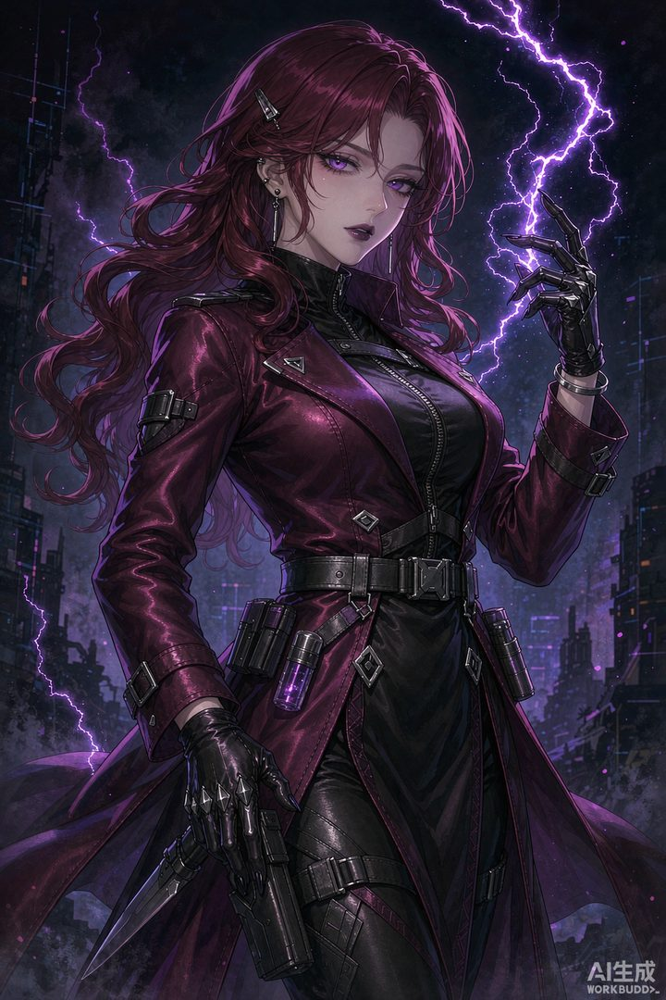

核心结论：卡芙卡是DOT（持续伤害）体系的核心引爆手，战技和大招可立即引爆敌方身上的触电等持续伤害。必须与 DOT 角色组队，是 DOT 体系不可或缺的发动机。
一、角色定位
- 属性/命途：雷 · 虚无
- 定位：DOT 引爆手 / 副C，速度属性优先级最高
- 核心机制：战技引爆目标 DOT，终结技群体触电+引爆，天赋给自身挂的触电增伤
- 强度评级：T1（DOT队核心，环境适配强）
二、配队推荐
DOT队（毕业）
卡芙卡 + 黑天鹅 + 阮梅 + 藿藿 / 符玄
- 黑天鹅叠【奥迹】层数，卡芙卡引爆，双核输出闭环
- 阮梅增伤+加速+削韧效率，DOT队最佳辅助
- 藿藿回能+治疗；符玄分摊伤害保生存
低配 DOT 过渡
卡芙卡 + 桑博 / 桂乃芬 / 卢卡 + 艾丝妲 + 娜塔莎 — 无黑天鹅时的平民 DOT 组合。
雷伤直伤队（新手过渡）
卡芙卡 + 布洛妮娅 + 停云 + 罗刹 / 符玄
- 布洛妮娅拉条让卡芙卡多动，停云增伤回能，弥补 DOT 手不足
三、遗器搭配
推荐套装
- 毕业外圈：幽锁深牢的系囚 4 件套（DOT 增伤+减防）
- 过渡：幽锁 2 + 快枪手 2 / 激奏雷电的乐队 2
- 内圈：苍穹战线格拉默（高速） / 太空封印站（新手友好） / 沉欢醉饮的海隅
主词条
| 部位 | 推荐主词条 |
|---|---|
| 躯干 | 攻击力% / 效果命中（凑75%） |
| 脚部 | 速度（目标160+） |
| 位面球 | 雷属性伤害加成 / 攻击力% |
| 连接绳 | 攻击力% / 能量恢复效率 |
副词条优先级：速度 > 攻击力% > 效果命中 > 击破特攻。高速是卡芙卡的生命线。
四、光锥选择
| 优先级 | 光锥 | 说明 |
|---|---|---|
| S | 只需等待（专武） | 增伤+速度+游丝 DOT，专武最优 |
| A | 晚安与睡颜 | 精5伤害比专武还高，DOT 队首选替代 |
| A | 猎物的视线 | 命中+DOT 伤害，新手过渡好选 |
| B | 延长记号 | 精5 雷伤，忘却商店可白嫖 |
五、星魂与抽取建议
| 配置 | 说明 |
|---|---|
| 0+0 | 机制完整，0魂即 DOT 队核心 |
| 1魂 | 触电倍率提升 |
| 2魂 | 能量循环更顺 |
| 4魂 | 解决能量问题，终结技频率大增 |
| 6魂 | 触电倍率和持续时间提升，打 Boss 更痛 |
总结：0+0 即可作为 DOT 体系核心；抽 DOT 体系建议卡芙卡+黑天鹅一起持有。